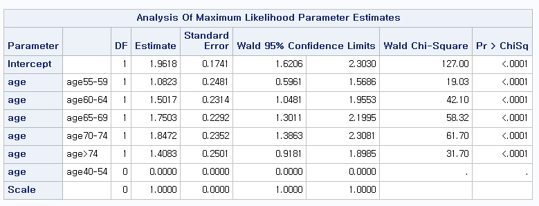

Chapter 5 Count Data Analysis
5.1 Poisson Regression
Count data, in which there is no upper limit to the number of counts, usually fall into two types
Rates : counts per unit of time/area/distance, etc
Contingency tables : counts cross-classified by categorical variables
We concentrate on rates data can be modelled using Poisson GLMs with a log link
Log-linear model for mean rate: \[\log(\lambda_i ) = \beta_0 + \beta_1 x_{1i} + \ldots +\beta_p x_{pi}\] where \(p\) is the number of predictors (or covariates) in the model
Random component: \[Y_i|\mathbf{X}_i \sim Poisson(\lambda_i )\]
Here, \(\lambda_i = E(Y_i|\mathbf{X}_i)=var(Y_i|\mathbf{X}_i)\)
Exponentiating gives us a model for the rate parameter, or expected counts: \[\lambda_i = e^{\beta_0 + \beta_1 x_{1i} + \ldots +\beta_p x_{pi}}\]
For Poisson random variables, expectation of \(Y_i\) is \(\lambda_i\), so the log-linear model provides a prediction for the expected value of \(Y_i\)
\(e^{\beta_j}\)=Rate ratio for a \(1\) unit increase in \(x_j\), i.e. rate ratio for \(x_j +1\) compared to \(x_j\), with other covariates held constant.
\(e^{\Delta\beta_j}\)=Rate ratio for a \(\Delta\) unit increase in \(x_j\), i.e. rate ratio for \(x_j +\Delta\) compared to \(x_j\), with other covariates held constant.
\(e^{\beta_0}\)=Baseline rate value, i.e. rate for an observation with all \(X\)’s equal to zero.
The systematic portion of the model allows linear combinations of the covariates: \[\beta_0 + \beta_1 x_{1i} + \ldots +\beta_p x_{pi}\]
Since we have no restrictions on the predictors \(X_1 , \ldots, X_p\), the predicted values can take any values on the real line: \((-\infty, +\infty)\)
But our outcome variable \(Y_i\) consistes of counts, so the expected value of \(Y_i\) has the restriction: \(\lambda_i \in \left[0, +\infty\right)\)
After taking a log transform, we get: \(\log(\lambda_i) \in (-\infty, +\infty)\) which is just what we wanted.
5.2 Example: Danish Lung Cancer Counts
Cases of lung cancer were counted in four Danish cities between \(1968\) and \(1971\) inclusive.
We have \(24\) observations on each of \(4\) variables:
Cases: the number of lung cancer cases
Pop: the popilation of each age group in each city
Age: the categorical age group; one of 40-54, 55-59, 60-64, 65-69, 70-74 or $>$74
city: the city; one of Fredericia, Horsens, Kolding, or Vejle
Questions of interest: How does the expected number of lung cancer counts vary by age?
Dataset

Boxplots of observed counts versus age category

Model \[\log(\lambda_i )= \beta_0 +\beta_1 I(Age55-59_i)+\beta_2 I(Age60-64_i) \]
\[+\beta_3 I(Age65-69_i)+\beta_4 I(Age70-74_i)+\beta_5 I(Age>74_i)\]
We are fitting a model with indicators for each of the age categories.
Baseline is the group aged \(40-54\).
\(I(age55-59)\) is an indicator of having age \(55-59\), it is equal to \(1\) for those of age \(55-59\) and \(0\) otherwise.
\(I(age60-64)\) is an indicator of having age \(60-64\), it is equal to \(1\) for those of age \(60-64\) and \(0\) otherwise.
etc...

\[ \log(\lambda_i ) = 2.110 -0.031 I(Age55-59_i)+0.265 I(Age60-64_i) \] \[+0.310 I(Age65-69_i)+0.192 I(Age70-74_i) -0.063 I(Age>74_i) \]
We interpret \(\hat{\beta}_0=2.110\) as the log expected count of cancer cases among individuals aged \(40-54\)
We interpret \(\hat{\beta}_0+\hat{\beta}_1=2.079\) as the log expected count of cancer cases among individuals aged \(55-59\)
We interpret \(\hat{\beta}_1=-0.031\) as the difference in log expected count of cancer cases comparing the \(55-59\) age group to the \(40-54\) age group. We can also interpret \(\hat{\beta}_1\) as a log relative rate
\[ \log(\lambda_i ) = 2.110 -0.031 I(Age55-59_i)+0.265 I(Age60-64_i) \] \[ +0.310 I(Age65-69_i)+0.192 I(Age70-74_i) -0.063 I(Age>74_i) \]
We interpret \(exp(\hat{\beta}_0)=8.24\) as the expected count of cancer cases among individuals aged \(40-54\)
We interpret \(exp(\hat{\beta}_0+\hat{\beta}_1)=8.00\) as the expected count of cancer cases among individuals aged \(55-59\)
We interpret \(exp(\hat{\beta}_1)=0.97\) as the ratio of expected counts comparing the \(55-59\) age group to the \(40-54\) age group. We can also interpret \(exp(\hat{\beta}_1)\) as a relative rate
Let’s perform a likelihood ratio test to look at the global hypothesis: \[H_0 : \beta_1 = \beta_2 = \beta_3 = \beta_4 =\beta_5 =0\] versus the alternative hypothesis: \[H_a : \text{at least one of the } \beta_i \text{'s is not } 0, \text{for } i\in 1,\ldots,5\]
Test statistic:
TS = -2(logLik(intercept only model)-logLik(Age model))
= 4.95 \(\sim \chi_5^2\)
Critical value for the hypothesis at level \(\alpha=0.05\): \(\chi_{5,0.05}^2 = 11.07\). Fail to reject the null hypothesis.
5.3 What About Accounting for Population Size?
So far we modelled the observed counts of cancer cases as Poisson counts.
The population size from each of these counts was drawn is also known.
Can we improve our analysis?
Each city and age group has a different population size.
If we model expected counts without accounting for population size, we may just be picking up effects of population distribution by age.
Accounting for population size can refine our analysis.
The distribution of population sizes appears bimodal.
The population sizes range from a minimum of \(509\) to a miximum of \(3,142\) people.

So far, we have modeled expected counts for each population group, within the \(4\) year period of time: \[Rate=Counts/4years\]
It may be more intersting to know the rate per person, per \(4\) year period of time: \[Rate=\frac{Counts/Population\ size}{4\ years} = \frac{Counts}{4\ person-years}\]
Even better, we can get the rate per person year as: \[Rate=\frac{Counts/4\ Population\ size}{4\ years} = \frac{Counts}{person-years}\]
Here, \(4\cdot Population\ size\) is equal to the number of person-years that we observed to obtain each count.
We can think of the person years at the denominator to be used to caculate the cancer rate per person, per year.
If we prefer the cancer rate per \(100\) person-years, we can just multiply the rate per person-year by \(100\).
Suppose we are told that \(100,000\) new cases of HIV were reported in the world, during the past three years.
What is the incidence rate of HIV?
We can calculate incidence as:
\[\frac{Number\ of\ new\ cases}{Number\ of\ people\ observed \cdot Amount\ of\ time\ observed} \]
\[ = \frac{100,000\ cases}{6,000,000,000\ people\ in\ the\ world \cdot 3\ years\ of\ observation} \]
\[ = 5.55 \times 10^{-6} \ cases / person - year \]
\[ = 5.55\ cases/ 1,000,000\ person - years \]
Based on this incidence rate, we could say that each year, there are about \(5.55\) new cases of HIV per \(1,000,000\) people per year.
So far, we have written a model for the expected number of counts over the \(4\) year period of observation.
However, if we know that the total populations generating our counts differ substantially, it does not make sense to write a log-linear model to consider expected counts direct.
What we really wnat is to consider, the rate per person year \[r_i = \frac{\lambda_i } {Pop_i}=\frac{E(count_i )}{Pop_i}\] and model that by a log-linear model.
Based on this model, we can still say: \[Y_i \sim Poisson(\lambda_i )=Poisson(r_i \cdot Pop_i)\]
On a log scale, our model will be: \[\log(r_{i})=\log(\frac{\lambda_i}{Pop_i} )=\beta_0 +\beta_1 I(Age55-59_i)+\beta_2 I(Age60-64_i) \]
\[ +\beta_3 I(Age65-69_i)+\beta_4 I(Age70-74_i)+\beta_5 I(Age>74_i) \]
- Exponentiating, we get: \[\frac{\lambda_i}{Pop_i} = exp\{ \beta_0 +\beta_1 I(Age55-59_i)+\beta_2 I(Age60-64_i) \]
\[+\beta_3 I(Age65-69_i)+\beta_4 I(Age70-74_i)+\beta_5 I(Age>74_i) \} \]
Divide the \(\lambda_i\)s by the population size that yielded each count to get rates "per \(4\) person-years".
Now that we have a model of rates per \(4\) person-years, we can divide by \(4\) to get rate per person-year.
We can then multiply by \(10,000\) to get rates per \(10,000\) person-years (maybe easier to interpret than person-years).
Dividing by 4 and multiplying by \(10,000\) is the same as multiplying by \(2500\):
Exponentiating, we get: \[\frac{\lambda_i}{Pop_i/2500} = exp\{ \beta_0 +\beta_1 I(Age55-59_i)+\beta_2 I(Age60-64_i) \]
\[ +\beta_3 I(Age65-69_i)+\beta_4 I(Age70-74_i)+\beta_5 I(Age>74_i) \} \]
- Finally, we should take a log-transform to get back our log-linear model:
\[\log(\frac{\lambda_i}{Pop_i /2500} ) =\beta_0 +\beta_1 I(Age55-59_i)+\beta_2 I(Age60-64_i) \]
\[ +\beta_3 I(Age65-69_i)+\beta_4 I(Age70-74_i)+\beta_5 I(Age>74_i) \]
- Further, we can move the population denominator to the other size of the equation:
\[\log(\lambda_i ) = \log(Pop_i/2500) + \beta_0 +\beta_1 I(Age55-59_i)+\beta_2 I(Age60-64_i) \]
\[ +\beta_3 I(Age65-69_i)+\beta_4 I(Age70-74_i)+\beta_5 I(Age>74_i) \]
Here, we call the amount \(\log(Pop_i/2500)\) the offset.
using the offset is just a way of accounting for population sizes, which could vary by age, region, etc.
The term "offset" is jargon for predictor terms whose \(\beta\) coefficient is forced to be \(+1\).
Using an offset gives us a convenient way to model rates per person-years, instead of just modeling the raw counts.
If all the observations have the same exposure, the model does not need an offset term and we can model \(\log(\lambda_i)\) directly.

After including the offset in our model, we need to change our regression coefficient interpretations a bit.
We should think of the outcome as \(\log(\lambda_i)-\text{offset}_i\).
In this case, \(\lambda_i\) was the expected number of cases observed in a particular age group and city, within a \(4\) year period of time.
Our offset was \(\log(Pop_i/2500)\).
So, we should think of the outcome as log rate per \(10,000\) person years.
\(\beta_0\) is the log rate of cancer cases per \(10,000\) person years in the baseline age group of \(40-54\).
\(\beta_1\) is the log relative rate of cancer cases per \(10,000\) person years comparing the age group \(55-59\) to the baseline age group \(40-54\).
\(\beta_2\) is the log relative rate of cancer cases per \(10,000\) person years comparing the age group \(60-64\) to the baseline age group \(40-54\).
Before we put the offset in our model, none of our regression coefficients were statistically significant.
\(\Rightarrow\) without the offset, there was no statistically sifnificant difference in the expected counts per year at age group compared to the baseline \(40-54\) group.
After including the offset, we’re looking for differences in the expected counts per person-year, across age groups.
Let’s perform a likelihood ratio test to look at the global hypothesis: \[H_0 : \beta_1 = \beta_2 = \beta_3 = \beta_4 =\beta_5 =0\] versus the alternative hypothesis: \[H_a : \text{at least one of the } \beta_i \text{'s is not } 0, \text{for } i\in 1,\ldots,5\]
Test statistic:
TS = -2(logLik(intercept only, with offset)-logLik(Age model with offset)) = 101.6 \(\sim \chi_5^2\)
Critical value for the hypothesis at level \(\alpha=0.05\): \(\chi_{5,0.05}^2 = 11.07\). reject the null hypothesis.
Model
\[\log(\lambda_i ) = \log(Pop_i/2500) + \beta_0 +\beta_1 I(Age55-59_i)+\beta_2 I(Age60-64_i) \]
\[ +\beta_3 I(Age65-69_i)+\beta_4 I(Age70-74_i)+\beta_5 I(Age>74_i) \]
Predicted log rate of cancer per \(10,000\) person years among \(40-54\) year olds; \[\hat{\beta}_0=1.96\]
Predicted rate of cancer per \(10,000\) person years among \(40-54\) year olds; \[exp(\hat{\beta}_0)=exp(1.96)=7.09\]
Based on this model, we predict \(7.09\) new cases of lung cancer per \(10,000\) \(40-54\) year olds in Denmark, per year.
Predicted log rate of cancer per \(10,000\) person years among \(55-59\) year olds; \[\hat{\beta}_0 + \hat{\beta}_1=3.04\]
Predicted rate of cancer per \(10,000\) person years among \(55-59\) year olds; \[exp(\hat{\beta}_0 + \hat{\beta}_1)=exp(1.96+1.08)=20.9\]
Based on this model, we predict \(20.9\) new cases of lung cancer per \(10,000\) \(55-59\) year olds in Denmark, per year.
We predicted an incidence rate of \(7.09\) cases per \(10,000\) per year among \(40-54\) year olds, and a rate of \(20.9\) new cases per \(10,000\) person years for \(55-59\) years olds.
\(\Rightarrow\) The relative rate per \(10,000\) person years comparing \(55-59\) years olds to \(40-54\) years olds is \(20.9/7.09 \approx 2.94\).
We could have gotten the same answer by taking \(exp(\hat{\beta}_1)=exp(1.08)=2.94\).
\(exp(\hat{\beta}_1)\) is the relative rate cancer cases per \(10,000\) person years comparing \(55-59\) years olds to \(40-54\) years olds.
\(\hat{\beta}_1\) is the log relative rate.
There is an increasing trend in relative rates compared to the baseline \(40-54\) year old group as age increases.
The only exception for this trend is for the \(Age>74\) group.
The model fit matches what we know from biology: the risk of cancer does increase with age, but trails of for the oldest individuals perhaps because
Those surviving to age \(74\) and beyond have genes which protect against cancer.
Cell growth slows down at older ages, slowing the growth of tumors.
The purpose of an offset is the change the denominator or units of a rate.
Often, the model without an offset does not make much sense, and likely fails our Poisson assumptions.
We should always try to use an offset if we suspect that the underlying population sizes differ for each of the observed counts.
Typically the offset will take value \(\log(N)\) where \(N\) is the sample size, or the number of person-years.
If the underlying population sizes are not available, we just have to do our best - but be careful about applying the Poisson model.
Log-linear models can be a good way to approach count data.
If population sizes or denominators are available, it’s a good idea to include an offset.
Log-linear models can also be useful in analyzing binary data from cohort studies, but with care.